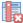

Tvorba nových vrstev a jejich editace¶
Vytvoření Shapefile vrstvy¶
Novou vrstvu lze vytvořit pomocí tlačítka Nová Shapefile vrstva nebo v hlavním menu .

Obr. 70 Nová vektorová vrstva.¶
V první řadě je nutné zadat cestu, kam se nová vrstva vytvoří. Dále při vytváření zvolíme typ vrstvy (bod, linie nebo polygon), souřadnicový systém vrstvy, a pokud je třeba, přidáme nové atributy. Také lze nastavit vytvoření Z hodnot (nadmořské výšky) nebo M hodnot (další měřené hodnoty).
Vytváření nového atributu:
Název - název atributu (max. 10 znaků) - toto omezení vychází z formátu Esri Shapefile, který je zde použit
Typ

Textová data(String) - formát buněk je text, nelze použít pro výpočty (max. 255 znaků)Celé číslo(Integer) - formát buněk je celé číslo, tedy bez desetinných míst (max. 10 znaků)Desetinné číslo(Real) - formát buněk je desetinné číslo (max. 10 znaků)Datum(Date) - formát buněk je datum (max. 20 znaků)
Délka - počet znaků
Přesnost - počet desetinných míst
pro přidání atributu vrstvy je nutné kliknout na tlačítko Přidat do seznamu polí
Ve spodní části okna máme seznam atributů, které máme ve vrstvě připravené. Atributy lze odstranit označením a kliknutím na tlačítko  Odstranit pole. Automaticky je zde přidaný atribut „id“, pokud ho nechceme, lze jej také vymazat.
Pokud máme vše nastaveno, potvrdíme tlačítkem OK a nová vrstva se automaticky nahraje do projektu.
Editace vrstvy¶
Editaci vrstvy spustíme pomocí tlačítka Přepnout editaci nebo v hlavním menu . Spuštěním režimu editace se aktivují editační funkce v panelu a bude nám umožněno vytvářet nové prvky a jejich atributy nebo editovat stávající. Vrstva, která je momentálně v režimu editace, je v seznamu vrstev znázorněna s editační ikonkou .
Obr. 71 Znázornění režimu editace vrstvy v seznamu vrstev.¶
Režim editace ukončíme opět pomocí tlačítka Přepnout editaci. Provedené změny je vhodné průběžně ukládat pomocí ikony Uložit změny vrstvy. Pokud při editaci zapomeneme uložit změny, QGIS se nás při ukončení editace zeptá, zda chceme provedené změny uložit, či nikoliv.
Základní nástroje editace jsou dostupné ve výchozím nastavení mezi ostatními Nástrojovými lištami. Některké nástroje jsou ale dostupné v samostatné liště Pokročilá digitalizace. Tu můžeme aktivovat v seznamu všech dostupních položek a to pomocí pravého kliku a následné aktivace vybrané položky.

Zapnutí panelu Pokročilá digitalizace.
Základní editace geometrie¶
, ,  Přidat … prvek - kliknutím vytvoříme prvek (bod), nebo lomové
body prvku (linie, polygon). V druhém případě ukončíme tvorbu prvku
kliknutím pravým tlačítkem a přidáme případné atributy. Při
přidávání lomových bodů je možné se vrátit o krok zpět pomocí
klávesy Backspace nebo Del.
Přidat … prvek - kliknutím vytvoříme prvek (bod), nebo lomové
body prvku (linie, polygon). V druhém případě ukončíme tvorbu prvku
kliknutím pravým tlačítkem a přidáme případné atributy. Při
přidávání lomových bodů je možné se vrátit o krok zpět pomocí
klávesy Backspace nebo Del.

Obr. 72 Vytváření nového prvku ve vrstvě polygonů. Pokud by v tomto momentě byla tvorba prvku pravým kliknutím ukončena, polygon by měl tři uzly (tvar trojúhelníku).¶
- Nástroj na lomové body - pomocí nástroje uzlů lze
přidávat body kliknutím na křížek ve středu hrany a umístěním bodu
přidávat body dvojklikem na hranu a umístěním bodu
posunovat existující body kliknutím na bod a umístěním bodu
mazat body označením bodu (nebo více bodů pomocí Shift) a stisknutím klávesy Backspace nebo Del
posouvat celé hrany kliknutím na hranu a umístěním hrany
Obr. 73 Přidání a přesunutí lomového bodu (uzlu, vertexu).¶
Nástroj uzlů lze použít ve dvou módech, buď pouze pro vrstvu kterou editujeme, nebo pro všechny vrstvy které jsou v módu editace
Vymazat vybrané - smaže vybrané prvky
Přesunout prvek/prvky - jednotlivé prvky přesuneme kliknutím na prvek, posunutím a opětovným kliknutím
Obr. 74 Přesun prvku.¶
Další variantou funkce je Kopírovat a přesunout prvek/prvky, kdy stejným principem prvky kopírujeme. Pro přesun nebo kopírování více prvků můžeme pracovat s více prvky, které máme ve výběru.
Rozdělit objekt - naklikáme „řez“ přes místa, které chceme rozdělit a pro ukončení klikneme pravým tlačítkem, prvek se nám v místech průsečíků rozdělí.

Obr. 75 Rozdělení polygonu na dva.¶
Sloučit vybrané prvky - nejdříve pomocí
výběru označíme prvky, které chceme spojit. Při sloučení
vyskočí okno, ve kterém je možné zadat hodnoty atributů „nového“ - sloučeného
prvku. Tyto hodnoty můžeme odvodit z konkrétního vstupního prvku, nebo je lze
vypočítat (např. suma, průměr). Výchozí hodnota atributů je NULL,
tedy prázdná hodnota.

Obr. 76 Sloučení sousedních polygonů.¶
 Změnit tvar prvků - obdobně jako při rozdělení
nebo tvorbě nového prvku lze naklikáním nového tvaru změnit tvar
stávajícího prvku. Pro změnu tvaru musí být při naklikávání „řezu“
vždy minimálně dva průsečíky. V případě změny tvaru polygonu bude
část s menší plochou vymazána (Obr. 77).
Změnit tvar prvků - obdobně jako při rozdělení
nebo tvorbě nového prvku lze naklikáním nového tvaru změnit tvar
stávajícího prvku. Pro změnu tvaru musí být při naklikávání „řezu“
vždy minimálně dva průsečíky. V případě změny tvaru polygonu bude
část s menší plochou vymazána (Obr. 77).
Obr. 77 Změna tvaru polygonu - zmenšení.¶

Obr. 78 Změna tvaru polygonu - zvětšení.¶

Obr. 79 Změna tvaru linie.¶
Přichytávání (snapping)¶
Pro topologicky čistou editaci můžeme pomocí lišty nastavit přichytávání kurzoru s určitou citlivostí k uzlům či segmentům konkrétních vrstev. Přichytávání je nejdříve nutné aktivovat kliknutím na ikonu Enable Snapping, nebo využít klávesovou zkratku S. Přichycení kurzoru se zobrazí výrazně růžovým čtverečkem v případě lomového bodu (viz Obr. 81) nebo křížkem v případě segmentu (Obr. 82).

Obr. 80 Základní okno možnosti přichytávání.¶
Obr. 81 Přichycení kurzoru pouze k lomovému bodu.¶

Obr. 82 Přichycení kurzoru k segmentu.¶
Nastavení
:Všechny vrstvy - přichytávání ke všem viditelným vektorovým vrstvám projektu
Aktivní vrstva - přichytávání pouze v rámci editované vrstvy, ostatní vrstvy ignoruje
Pokročilé nastavení - režim pokročilého nastavení, lze nastavit různé nastavení pro jednotlivé vrstvy a nabízí možnost Vyvarovat se protnutí
Open snapping Options...- otevře nastavení přichytávání v samostatném okně
Přichytit k
:Tolerance
 - vzdálenost, od které se kurzor bude
k lomovému bodu nebo segmentu přichytávat, hodnotu lze zadat v mapových
jednotkách (vzdálenost na mapě) nebo pixelech (vzdálenost na monitoru)
- vzdálenost, od které se kurzor bude
k lomovému bodu nebo segmentu přichytávat, hodnotu lze zadat v mapových
jednotkách (vzdálenost na mapě) nebo pixelech (vzdálenost na monitoru)Zapnout topologickou editaci - při aktivaci lze pomocí Nástroj uzlú posouvat společný lomový bod přichycení obou prvků najednou. Pokud není aktivní, lomový bod lze oddělit
Zapnout přichytávání na protnutí - při aktivaci se bude kurzor přichytávat i na případné místo „překřížení“ segmentů (linií)
Zapnout trasování - trasování umožňuje vytvářet nové prvky tak aby na sebe přímo navazovaly (topologicky čistá data). Funguje na principu vyhledání nejkratší vzdálensoti na segmentech mezi zadanými body. Trasování může být problematické v případě, že máme vrstvu s více navazujícími polygony, kdy nejkratší vzdálenost nemusí vést po vnější hraně skupiny polygonů (Obr. 84). To lze vyřešit přidáním více bodů při trasování, popř. u polygonů využitím funkce Vyvarovat se protnutní

{kind=link}
{kind=link}
{kind=link}
{kind=link}
{kind=link}
{kind=link}
{kind=link}
{kind=link}
{kind=link}
{kind=link}
{kind=link}
{kind=link}
{kind=link}
{kind=link}
{kind=link}
{kind=link}
{kind=link}
{kind=link}
{kind=link}
{kind=link}
{kind=link}
{kind=link}
{kind=link}

Obr. 83 Trasovaní k linii při tvorbě polygonu.¶

Obr. 84 Trasovaní s nejkratší vzdáleností při tvorbě line.¶
Tip
Nastavení přichytávání lze měnit i v momentě, kdy vytváříme prvek a potřebujeme změnit parametry jen pro přidání konkrétního uzlu (např. Obr. 81 a Obr. 82).
Pokročilý režim přichytávání¶

Obr. 85 Režim pokročilého nastavení přichytávání.¶
V pokročilém režimu lze jednotlivé parametry nastavit pro každou vrstvu
zvlášť, navíc je zde u polygonových vrstev funkce  Vyvarovat
se protnutí, která zabraňuje polygonům jejich překryv, což lze mimo jiné
využít jako alternativu k funkci trasování. Nový polygon potom můžeme zakreslit
Vyvarovat
se protnutí, která zabraňuje polygonům jejich překryv, což lze mimo jiné
využít jako alternativu k funkci trasování. Nový polygon potom můžeme zakreslit
s přesahem do sousedícího polygonu, tento přesah bude potom automaticky vymazán. Takto snadno docílíme čistě navazujících polygonů.
Obr. 86 Příklad použití Vyvarovat se protnutí.
a) bez Vyvarovat se protnutí - polygon se vytvoří tak,
jak jsme ho zakreslili, a
překrývá předchozí polygon. Při odstranění nového polygonu bychom
viděli opět hranici polygonu jako v prvním kroku.
b) Vyvarovat se protnutí - polygon se vytvoří bez
překryvu, hranice na sebe čistě navazuje.¶
Editace atributové tabulky¶
Pokud máme aktivní editaci ( Přepnout editaci), můžeme editovat nejen geometrii, ale i atributovou tabulku vrstvy. V okně atributové tabulky lze editaci ukládat Uložit změny vrstvy i mazat vybrané prvky Vymazat vybrané:
{kind=link}
kliknutím do libovolného pole můžeme vepisovat a upravovat hodnoty tabulky
Smazat pole - vyvolá nabídku, ze které vybereme sloupce k vymazání
Spravovat sloupce - vyvolá nabídku, ve které můžete upravit viditelnost sloupce
Otevřít kalkulátor polí - pomocí kalkulátoru polí lze vytvářet nebo aktualizovat sloupce (atributy) na základě zadaného výrazu (vzorce)
{kind=link}
Kalkulátor polí¶
Pomocí funkce Otevřít kalkulátor polí
můžeme zadáním výrazu provádět výpočty na základě existujících
hodnot v atributové tabulce nebo funkcí (např. výpočet rozlohy
polygonu). Výsledek výrazu můžeme nechat zapsat do nového sloupce,
do virtuálního sloupce, nebo lze aktualizovat již existující sloupec.
Obr. 87 Okno kalkulačky polí.¶
Nejdříve je nutné nastavit, zda chceme výsledek zapsat do nového pole, virtuálního pole, nebo pouze aktualizovat existující pole.
Vytvořit nové pole
- vytvoří nové pole, zde je
třeba definovat parametry nového atributuVytvořit virtuální pole
- vytvoří virtuální
pole, které se při každé změně automaticky aktualizuje. Nevýhodou
může být, že se pole neukládá do zdrojových dat, ale pouze do
souboru projektuAktualizovat existující pole
- přepíše hodnoty ve
vybraném poli- - vybereme z nabídky vrstvu, kterou cheme přepsat
Nyní můžeme přejít k zadání vlastního výrazu - záložka Výraz.
Levá část okna (Výraz) je prostor zadání výrazu, v horní části máme několik tlačítek s vybranými operátory a ve spodní části potom náhled výstupu.
Obr. 88 Okno pro zápis výrazu.¶
Pravá část okna (Funkce) slouží k rychlému zadání funkcí nebo parametrů do výrazu, v pravé části se k vybrané funkci/parametru zobrazuje nápověda. Požadované položky lze vyhledat pomocí filtru nebo prohledáním příslušných kategorií. Přidání funkce nebo hodnoty pole pomocí okna funkcí se provádí dvojklikem na položku.

Obr. 89 Prohledávání funkcí v kategoriích.¶
Při zadávání parametru pole nebo hodnoty pole (Pole a hodnoty) je možné nechat si zobrazit všechny hodnoty (tlačítko: všechny jedinečné hodnoty) nebo prvních 10 hodnot (tlačítko: 10 vzorků) atributu.

Obr. 90 Zobrazení všech hodnot konkrétního atributu pomocí tlačítka všechny jedinečné hodnoty.¶

Obr. 91 Příklad jednoduchého výpočtu plochy polygonů vypsáním výrazu „$area“.¶
Poznámka pro pokročilé
Druhá záložka - Editor funkcí umožňuje definovat vlastní funkce pomocí jazyka Python
Tip
Editovat stávající atributy lze i přímo z atributové tabulky, a to
pomocí panelu (Obr. 92), který se aktivuje po přepnutí do
režimu editace. Zde vybereme atribut, který chceme editovat, a zadáme
požadovaný výraz (ručně nebo pomocí dialogu  ), potom
potvrdíme aktualizaci buď pro všechny prvky, nebo jen pro prvky vybrané.
), potom
potvrdíme aktualizaci buď pro všechny prvky, nebo jen pro prvky vybrané.

Obr. 92 Panel editace atributů v atributové tabulce.¶